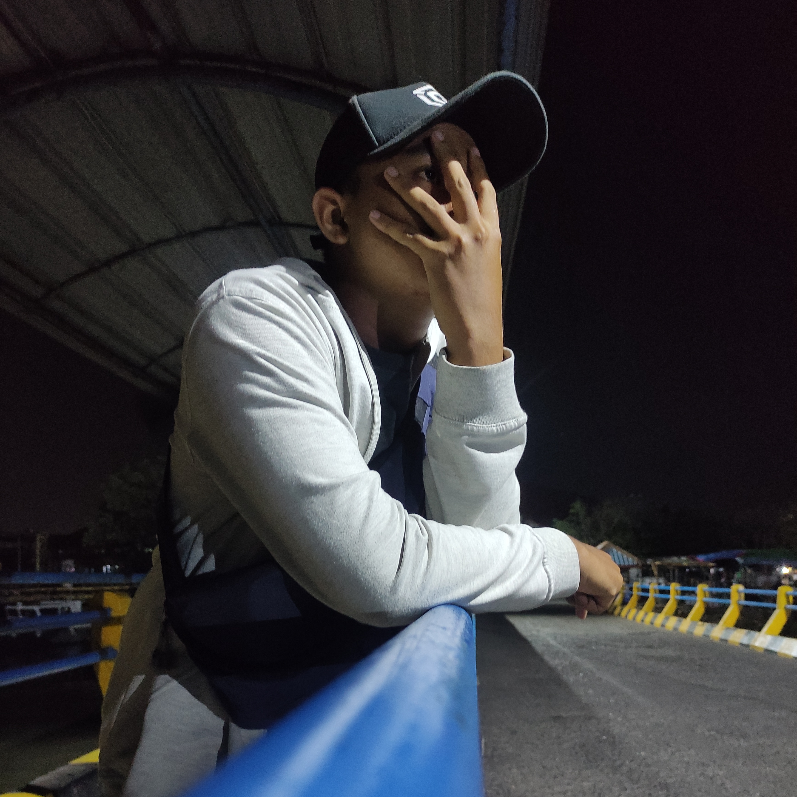

Biodata
| NIM | : | 220441100014 |
|---|---|---|
| Nama Lengkap | : | Muhammad Arif Rizqy Fachrudin |
| Nama Panggilan | : | Rizqy |
| Tempat Tanggal Lahir | : | Mojokerto, 24 Januari 2003 |
| Umur | : | 19 Tahun |
| Alamat | : | Jl. Raya Sawahan, No. 58, Dsn. Sawahan, RT/RW 001/001, Ds. Sidomulyo, Kec. Bangsal, Kab. Mojokerto |